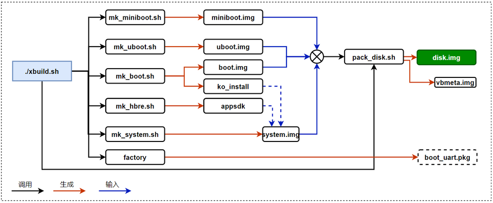

4.1. 环境搭建及编译说明
4.1.1. 概述
本章介绍X3M BSP开发环境的要求及搭建，源码的目录结构，系统镜像的编译说明。
4.1.2. 开发环境
建议采用交叉编译开发的方式进行X3M的开发，在X86主机上完成板端程序的开发、编译，上传到设备上进行运行调试。
主机编译环境要求
推荐使用Ubuntu 18.04 操作系统，若使用其它系统版本，可能需要对编译环境做相应调整。
确保以下工具软件都正确安装：
sudo apt-get install -y build-essential make cmake libpcre3 libpcre3-dev bc bison \
flex python-numpy mtd-utils zlib1g-dev debootstrap \
libdata-hexdumper-perl libncurses5-dev zip qemu-user-static \
curl repo git liblz4-tool apt-cacher-ng libssl-dev checkpolicy autoconf \
android-tools-fsutils
如果要在Ubuntu 20.04版本，请按照如下命令安装依赖工具：
sudo apt-get install -y build-essential make cmake libpcre3 libpcre3-dev bc bison \
flex python-numpy mtd-utils zlib1g-dev debootstrap \
libdata-hexdumper-perl libncurses5-dev zip qemu-user-static \
curl repo git liblz4-tool apt-cacher-ng libssl-dev checkpolicy autoconf \
android-sdk-libsparse-utils android-sdk-ext4-utils
GCC工具链安装
交付包SDK使用gcc 9.3.0版本的交叉编译工具链，交叉编译工具链包含在SDK压缩包platform_source_code.tar.gz中，路径为：platform_source_code/toolchain/gcc-ubuntu-9.3.0-2020.03-x86_64-aarch64-linux-gnu.tar.xz
编译SDK前，需要把交叉编译工具解压到board_xxx_config.mk配置文件指定的/opt目录下（板级配置文件默认都存放在 device/horizon/x3目录下，会有多套配置，请根据具体的需求选择），命令如下：
sudo tar -xvf toolchain/gcc-ubuntu-9.3.0-2020.03-x86_64-aarch64-linux-gnu.tar.xz -C /opt
通常操作/opt目录需要sudo权限，如果用户获取权限不便，也可以将工具链安装到其他目录下，同时用户需要同步修改board_xxx_config.mk板级配置文件中TOOLCHAIN_PATH选项的路径，例如:
# 板级配置文件 device\horizon\x3\board_yocto_emmc_abboot_config.mk
# 配置交叉编译工具链
export ARCH=arm64
export TOOLCHAIN_PATH=/opt/gcc-ubuntu-9.3.0-2020.03-x86_64-aarch64-linux-gnu
配置交叉编译工具链的lib库查找路径：
export LD_LIBRARY_PATH=/opt/gcc-ubuntu-9.3.0-2020.03-x86_64-aarch64-linux-gnu/lib/x86_64-linux-gnu:$LD_LIBRARY_PATH
要想 LD_LIBRARY_PATH 的配置永久生效，需要把以上命令添加到环境变量文件 “~/.profile” 或者 “~/.bash_profile” 的最后一行。
4.1.3. 源码目录结构
解压整体 SDK 压缩包后，在 board_support_package 目录下可以找到 BSP 的 platform_source_code.tar.gz 源码压缩包。
解压bsp源码：
tar -xvf platform_source_code.tar.gz
解压后的目录结构如下：
| 目录 | 说明 |
|---|---|
| appsdk | 多媒体相关接口库和头文件 |
| build | 编译脚本 |
| device | 板级配置，每种硬件对应一份配置文件 |
| miniboot | 生成包含分区表、spl、ddr、bl31一体的启动固件，需要重点关注ddr的参数 |
| uboot | uboot源代码 |
| boot | 内核源代码和预编译驱动模块*.ko文件 |
| system | 根文件系统 |
| hbre | sample代码和应用封装 |
| toolchain | 交叉编译工具链 |
4.1.4. 编译过程介绍
所有的编译脚本都存放在 build 目录下，xbuild.sh 是主要的编译脚本，编译与固件打包过程如下图所示。

miniboot.img： 最底层的启动引导程序，完成ddr的初始化、uboot的加载和引导
uboot.img： 在运行linux kernel前的引导加载程序
boot.img： linux kernel镜像和设备树配置
ko_install： 内核编译后生成的驱动模块文件
appsdk： 地平线多媒体开发接口库和头文件
system.img： 根文件系统镜像，包括glibc运行库、shell、各种工具软件、脚本，可以配置是否集成ko_install和appsdk
disk.img： 包含以上有所镜像的系统固件
boot_uart.pkg： 支持串口启动的uboot固件，用于刷机和调试uboot
4.1.4.1. 选择板级配置
执行lunch命令选择硬件板级配置文件（根据不同的sdk版本，以下示例显示会有所区别）
cd build
./xbuild.sh lunch
You're building on #184-Ubuntu SMP Thu Mar 24 17:48:36 UTC 2022
Lunch menu... pick a combo:
0. horizon/x3/board_ubuntu_emmc_config.mk
1. horizon/x3/board_ubuntu_emmc_micron_4GB_config.mk
2. horizon/x3/board_ubuntu_emmc_samsung_4GB_config.mk
3. horizon/x3/board_ubuntu_emmc_sdcard_config.mk
4. horizon/x3/board_ubuntu_nand_sdcard_config.mk
5. horizon/x3/board_yocto_emmc_abboot_config.mk
6. horizon/x3/board_yocto_emmc_golden_micron_4GB_config.mk
7. horizon/x3/board_yocto_emmc_golden_samsung_4GB_config.mk
Which would you like? [0] :
根据提示选择板级配置文件。
以上预置配置文件都是适配 X3SDB开发板的配置，区别在于使用的ddr、分区表、根文件系统不同：
| 板级配置文件 | 内存 | rootfs | 存储器 | 启动方式 | 备份方式 |
|---|---|---|---|---|---|
| board_ubuntu_emmc_config.mk | Samsung 2GB LPDDR4 | ubuntu-20.04 | emmc | emmc | golden |
| board_ubuntu_emmc_micron_4GB_config.mk | Micron 4GB LPDDR4 | ubuntu-20.04 | emmc | emmc | golden |
| board_ubuntu_emmc_samsung_4GB_config.mk | Samsung 4GB LPDDR4 | ubuntu-20.04 | emmc | emmc | golden |
| board_ubuntu_emmc_sdcard_config.mk | Samsung 2GB LPDDR4 | ubuntu-20.04 | emmc | sdcard | 无 |
| board_ubuntu_nand_sdcard_config.mk | Samsung 2GB LPDDR4 | ubuntu-20.04 | nand | sdcard | 无 |
| board_yocto_emmc_abboot_config.mk | Samsung 2GB LPDDR4 | yocto | emmc | emmc | AB |
| board_yocto_emmc_golden_micron_4GB_config.mk | Micron 4GB LPDDR4 | yocto | emmc | emmc | golden |
| board_yocto_emmc_golden_samsung_4GB_config.mk | Samsung 4GB LPDDR4 | yocto | emmc | emmc | golden |
lunch命令还支持指定数字和板级配置文件名直接完成配置。
$ ./xbuild.sh lunch 0
You're building on #118~18.04.1-Ubuntu SMP Thu Mar 3 13:53:15 UTC 2022
You are selected board config: horizon/x3/board_ubuntu_emmc_config.mk
$ ./xbuild.sh lunch board_ubuntu_emmc_config.mk
You're building on #118~18.04.1-Ubuntu SMP Thu Mar 3 13:53:15 UTC 2022
You are selected board config: horizon/x3/board_ubuntu_emmc_config.mk
4.1.4.2. 整体编译
进入到build目录下，执行 xbuild.sh 进行整体编译，首次编译耗时会比较长（1-2小时左右），请耐心等待：
cd build
./xbuild.sh
编译成功后，会在编译镜像输出目录（deploy） 目录下生成 miniboot.img， uboot.img， boot.img， system.img， vbmeta.img、disk.img等镜像文件和多媒体接口库 appsdk。其中disk.img就是完整的系统镜像文件。
4.1.4.3. 模块化编译
通过 xbuild.sh 脚本编译单独模块，生成的镜像文件会输出到编译镜像输出目录（deploy）下。
./xbuild.sh miniboot | uboot | boot | hbre | system | factory | debs
miniboot： 调用mk_miniboot.sh 生成 miniboot.img
uboot: 调用mk_uboot.sh 生成 uboot.img
boot: 调用mk_boot.sh 生成boot.img和驱动模块ko文件
hbre： 调用 mk_hbre.sh 生成 camera sensor驱动库、isp参数库文件、hbutils等
system: 调用 mk_system.sh 生成 system.img , 在这个脚本中会根据板级配置集成内核驱动模块、appsdk中的多媒体库、hbre中生成的库和工具软件到 deploy/rootfs 目录中作为最终的根文件系统
debs： 调用mk_debs.sh 生成ubuntu系统的deb安装包文件
模块化编译后，可以执行 pack 命令打包 disk.img
./xbuild.sh pack
如果是在硬件Bring up阶段，需要使用以下命令生成刷机工具依赖的 ddr 参数镜像和 boot_uart.pkg。在硬件需要适配新的ddr、网卡、nand等外设，更换了安全启动校验key时需要更新刷机工具中的boot_uart.pkg和ddr参数镜像。
在完成代码调整后可以使用 factory 命令生成新的boot_uart.pkg包，生成在镜像输出目录（deploy）的 factory_images 目录下。
./xbuild.sh factory